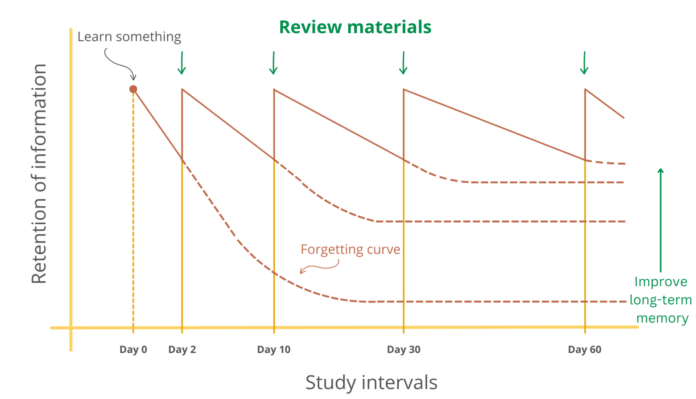
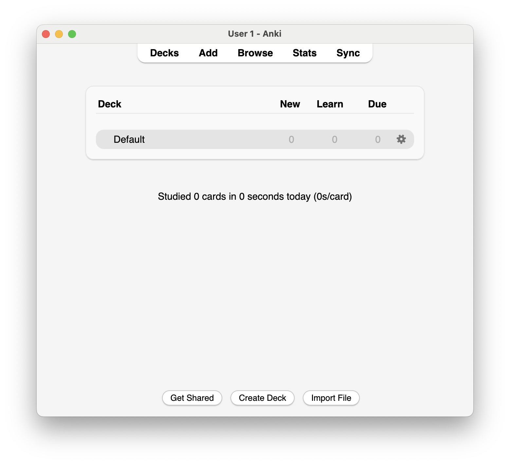

Spaced repetition
A memory hack to make revision easy

Overview
Over time we forget things, but in the 19th century, Ebbinghaus discovered that we forget things in a predictable way.
His work on the ‘forgetting curve’, since replicated (Murre and Dros 2015), showed that we forget things quickly at first, but then more slowly over time.
Reviewing and rehearsing what we have learnt at regular intervals helps us remember things for longer.
The forgetting curve diagram below shows this. The dotted lines show how much we remember if we don’t review what we have learned: After 30 days we will have forgotten almost everything(the first line on the graph). But reviewing the material on day 2, 10, 30 and so on interrupts the forgetting process. The forgetting curve becomes less steep, and we remember more of what we learnt for longer.

‘Spaced repetition’ takes advantage of this effect memory. By reviewing things just before you are likely to forget them, we can flatten the forgetting curve and retain information for longer.
Bahrick et al. (1993) showed that spacing your learning over a longer time is much more effective than cramming. They found that when students spaced their revision over 8 weeks, rather than just 2, they could spend half as much time studying and still remember more of the material. Many other studies show the same effect.
Spacing your revision saves you a lot of time.
How to use spaced repetition
Use Anki!
Anki is a free, open-source flashcard app that uses spaced repetition to help you remember things.
You can create your own flashcards, and Anki schedules a review of the cards at the best possible intervals. The algorithm saves you time, because you will only review material when it has the largest possible benefit to your memory.
Instructions
Download Anki to your computer: https://apps.ankiweb.net
Add 10 flashcards to your “deck” based on information in lectures this week (see how below)
Review these flashcards, and keep practicing over the next few weeks.
Tell Psybot how you got on. Write a short note describing how you found the process, and whether you think it will be useful for you in the future.

Using Anki
Installing Anki and adding cards
Once you have installed Anki from: https://apps.ankiweb.net, open the Application.
It should look like this:

Click “Add” to create your first cards.

Enter what you want to see on the “Front” and the “Back” of the flashcard. This is what you will see when you test yourself.
For example you might add something like this:

Deciding what to add to your cards is a bit of an art. We have some guidance below, but as some suggestions from lectures this week:
- List 3 influences on the quality of encoding
- What is deductive reasoning? How does it differ from induction?
- How do short term and working memory differ from one another?
Writing good cards
Writing effective Anki cards is a skill. Here are some tips and best practices for creating high-quality cards:
- Keep It Simple
One Fact Per Card: Each card should test only one piece of information. This makes it easier to focus on specific details and ensures that you thoroughly understand each concept. Clear and Concise: Use simple language and avoid unnecessary details. The goal is to make the question and answer as clear as possible.
- Only Add Information You Understand
Avoid Rote Memorization: Don’t add information to your cards if you don’t understand it. Focus on comprehension rather than memorization. A good tip is to add material as you cover it during the year (don’t try and add the textbook!)
- Use Images and Mnemonics
Visual Aids: Where possible, include images, diagrams, or charts. Visual information can enhance memory retention and make studying more engaging. Mnemonics: Use mnemonic devices to help remember complex information. Associating facts with memorable phrases or images can improve recall.
- Active Recall
Formulate Questions: Instead of simply noting down facts, turn them into questions. This engages your brain more actively and improves learning. Avoid Yes/No Questions: These don’t encourage deep thinking. Use open-ended questions that require a detailed answer.
- Contextual Learning
Add Context: Where applicable, provide a brief context or example to explain why the information is relevant or how it is used. Link Concepts: Create cards that connect related ideas, showing how different pieces of information fit together.
- Personalize Your Cards
Relate to Your Experiences: Customize cards with examples that are meaningful to you. This personal touch can make the information more memorable. Use Your Own Words: Writing in your own words helps ensure that you understand the material and makes it easier to recall.
Extension activities
Make sure you review your cards regularly. You can also add and review cards on your phone: